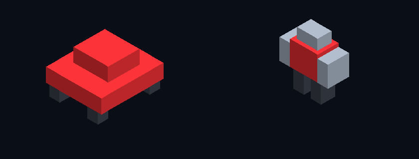

全体の流れ
- 題材を決める（例：新幹線 → ロボット、城 → ロボット）
- Python スクリプトを書く。箱を積んで形を作り、形態ごとに分けて作る
- スクリプトを実行すると、MagicaVoxel 形式の
.voxとプレビュー画像が出る .voxを MagicaVoxel で開いて確認する。このサイトのページ内ビューアのような仕組みで、ブラウザで変形表示もできる
ポイントは、モデルを「データ」としてではなく「生成スクリプト」として持つことです。直したい所があれば、スクリプトの数字を直して実行し直せます。このサイトのモデルは全てこの方法で作られていて、各モデルのカードから生成スクリプト（.py）もダウンロードできます。
必要なもの
- Python 3 と、ライブラリの numpy と pillow
- （任意）.vox を開いて見るための MagicaVoxel（無料）
実行は uv を使うと、ライブラリの用意まで一気にできます。
uv run --with numpy --with pillow python3 sample_voxel.pyスクリプトの型
最小のサンプルです。小さい車が小さいロボットに変形します。実行すると car.vox / robot.vox / preview_sample.png ができます。

サンプルの実行結果。左が車、右がロボットです。
"""変形ボクセルの最小サンプル: 小さい車 → 小さいロボット
使い方: uv run --with numpy --with pillow python3 sample_voxel.py
car.vox / robot.vox / preview_sample.png ができます。
"""
import struct
import numpy as np
from PIL import Image, ImageDraw
# 色のパレット (番号 1..9、0 は空)
PALETTE = {
1: (230, 235, 245, 255), # 白っぽい装甲
2: (155, 165, 180, 255), # グレーの装甲
3: (220, 45, 50, 255), # 赤のアクセント
4: (55, 60, 70, 255), # 暗い金属・関節
5: (35, 175, 240, 255), # 水色の窓・バイザー
}
def fill_box(grid, x0, x1, y0, y1, z0, z1, col):
"""(x, y, z) の範囲を色 col で埋める。x=幅, y=奥行き, z=高さ"""
X, Y, Z = grid.shape
x0, x1 = max(0, min(x0, x1)), min(X - 1, max(x0, x1))
y0, y1 = max(0, min(y0, y1)), min(Y - 1, max(y0, y1))
z0, z1 = max(0, min(z0, z1)), min(Z - 1, max(z0, z1))
grid[x0:x1 + 1, y0:y1 + 1, z0:z1 + 1] = col
def build_a():
"""形態A: 小さい車 (24 x 24 x 16)"""
g = np.zeros((24, 24, 16), dtype=np.uint8)
fill_box(g, 4, 19, 3, 20, 3, 6, 3) # 車体
fill_box(g, 7, 16, 7, 15, 7, 10, 3) # キャビン
fill_box(g, 8, 15, 8, 14, 8, 9, 5) # 窓
for wx in (5, 16): # タイヤ (変形後は脚の部品になる)
for wy in (3, 18):
fill_box(g, wx, wx + 2, wy, wy + 2, 0, 2, 4)
return g
def build_b():
"""形態B: 小さいロボット (24 x 24 x 16)。車体が胴、タイヤが脚になる"""
g = np.zeros((24, 24, 16), dtype=np.uint8)
fill_box(g, 8, 15, 9, 14, 6, 12, 3) # 胴体 (車体)
fill_box(g, 9, 14, 10, 13, 13, 15, 2) # 頭
fill_box(g, 10, 13, 10, 10, 14, 14, 5) # バイザー (窓)
fill_box(g, 5, 7, 9, 14, 6, 11, 2) # 左腕
fill_box(g, 16, 18, 9, 14, 6, 11, 2) # 右腕
for wx in (8, 13): # 脚 (タイヤの位置の部品)
fill_box(g, wx, wx + 2, 10, 13, 0, 5, 4)
return g
def export_vox(grid, filename):
"""MagicaVoxel 形式 (.vox) で書き出す"""
X, Y, Z = grid.shape
voxels = [(x, y, z, int(grid[x, y, z]))
for x in range(X) for y in range(Y) for z in range(Z)
if grid[x, y, z] > 0]
size_chunk = b'SIZE' + struct.pack('<II', 12, 0) + struct.pack('<III', X, Y, Z)
xyzi_content = struct.pack('<I', len(voxels))
for vx, vy, vz, vc in voxels:
xyzi_content += struct.pack('<BBBB', vx, vy, vz, vc)
xyzi_chunk = b'XYZI' + struct.pack('<II', len(xyzi_content), 0) + xyzi_content
rgba_content = bytearray(256 * 4)
for idx, (r, gg, b, a) in PALETTE.items():
rgba_content[(idx - 1) * 4:(idx - 1) * 4 + 4] = struct.pack('<BBBB', r, gg, b, a)
rgba_chunk = b'RGBA' + struct.pack('<II', len(rgba_content), 0) + bytes(rgba_content)
children = size_chunk + xyzi_chunk + rgba_chunk
main_chunk = b'MAIN' + struct.pack('<II', 0, len(children)) + children
with open(filename, 'wb') as f:
f.write(b'VOX ' + struct.pack('<I', 150) + main_chunk)
return len(voxels)
def render_iso(grid, scale=8):
"""等角投影のプレビュー画像を描く (簡易版)"""
img = Image.new('RGB', (420, 320), (10, 14, 23))
d = ImageDraw.Draw(img)
vox = [(x, y, z) for x in range(grid.shape[0]) for y in range(grid.shape[1])
for z in range(grid.shape[2]) if grid[x, y, z] > 0]
vox.sort(key=lambda v: v[0] + v[1] + v[2])
cx, cy = 210, 90
for x, y, z in vox:
r, g, b, _ = PALETTE[int(grid[x, y, z])]
sx = cx + (x - y) * scale * 0.866
sy = cy + (x + y) * scale * 0.5 - z * scale
s = scale
d.polygon([(sx, sy - s), (sx + s * 0.866, sy - s * 0.5), (sx, sy), (sx - s * 0.866, sy - s * 0.5)],
fill=(min(255, int(r * 1.15)), min(255, int(g * 1.15)), min(255, int(b * 1.15))))
d.polygon([(sx - s * 0.866, sy - s * 0.5), (sx, sy), (sx, sy + s), (sx - s * 0.866, sy + s * 0.5)],
fill=(int(r * 0.65), int(g * 0.65), int(b * 0.65)))
d.polygon([(sx, sy), (sx + s * 0.866, sy - s * 0.5), (sx + s * 0.866, sy + s * 0.5), (sx, sy + s)],
fill=(int(r * 0.85), int(g * 0.85), int(b * 0.85)))
return img
if __name__ == '__main__':
ga, gb = build_a(), build_b()
print('car :', export_vox(ga, 'car.vox'), 'voxels')
print('robot:', export_vox(gb, 'robot.vox'), 'voxels')
sheet = Image.new('RGB', (840, 320), (10, 14, 23))
sheet.paste(render_iso(ga), (0, 0))
sheet.paste(render_iso(gb), (420, 0))
sheet.save('preview_sample.png')
print('preview_sample.png を書きました')
型の要点は4つです。
PALETTE— 色は番号で持ちます。0 が空、1〜9 が色です。パレットは全形態で共通にしますfill_box— 直方体を置く道具です。形作りは基本これの積み重ねです（座標は x=幅、y=奥行き、z=高さ）build_a()/build_b()— 形態ごとに分けて作ります。部品と色を使い回すと「変形した」ように見えますexport_vox()— .vox の書き出しです。このまま使えます
仕様とコツ
- 大きさは最長辺で64ボクセル以内が目安です
- ボクセル数は、元の姿で 800〜2,500、ロボットで 1,500〜4,000 くらいが、軽くて見栄えのする範囲です
- 全体を1つにつなげて、宙に浮いたボクセルを作らないようにします
- 変形らしく見せるコツは、部品の再利用です。タイヤは脚に、車体は胴体に、翼は腕に、という対応を先に決めてから作ると、2形態に統一感が出ます
- 左右対称の題材は、片側を作って反転させると楽です
AI に書かせる場合
このサイトのモデルは、生成 AI（Antigravity / Gemini）に指示書を渡して作らせたものです。見本のスクリプトと一緒に、次のような指示書を渡すと、同じ流儀で量産できます。
# 変形ボクセルモデルの生成指示書
見本のスクリプト（sample_voxel.py）の流儀で、次の題材の変形ボクセルモデルを作ってください。
## 題材
- <題材キー> — <元の姿> → <変形先>（部品の再利用のヒント：例「車体が胴体、タイヤが脚になる」）
## 仕様
- 題材ごとに Python スクリプト1本（<題材キー>.py）。numpy の 3D グリッド（uint8、0=空、1〜9=パレット番号）に fill_box で形を作り、形態ごとに build_a() / build_b() を分ける。
- export_vox() で MagicaVoxel 形式の .vox を書き出し、等角投影のプレビュー画像も描く。
- 大きさは最長辺64ボクセル以内。ボクセル数は元の姿 800〜2,500、ロボット 1,500〜4,000 が目安。
- すべて単一の連結成分にし、浮いたボクセルを作らない。
- 2形態で部品と色を使い回し、「別のものを新規に作る」のではなく「変形した」と見えることが大事です。
## 成果物
<題材キー>.py / <題材キー>_a.vox / <題材キー>_b.vox / preview_<題材キー>.png完成例を読みたいとき
モデル集と武将ロボシリーズの各カードから、そのモデルの生成スクリプト（.py）と .vox がダウンロードできます。大きいモデルの作り方は、実物を読むのがいちばん早いです。